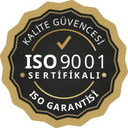
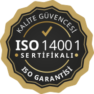
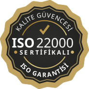
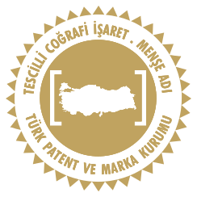

The land our olives grow on
Land-registry parcel, satellite view and grove details — the place behind every bottle.
Olivamore Grove
The grove where Olivamore's olive-growing journey began. Harvest and batch details are published in the Harvest Passport only when supported by documentation.
Trace a bottle back
The batch number connects the product and volume with harvest and milling dates and the available analysis document for that specific batch. Unverified details are not published.
Harvest
Early October, hand-picked. Olives never touch the ground; two separate sorting passes let only undamaged fruit through.
Pressing
Verified production methods and analysis details are published with the document that applies to each product.
Lab-test
Polyphenol, acidity and peroxide values are measured at an independent laboratory.
Bottle
Dark glass, argon protection; harvest date and batch number on the label.
We owe the soil
In our groves we plant cover crops and return pruning residue to the soil. We use no synthetic fertilizers, and we limit irrigation to a drip system. Good oil comes from living soil; there is no shortcut.
Product, year and result in one place
Instead of conflicting badges, we publish only the results that match the certificate image on our Quality page.



